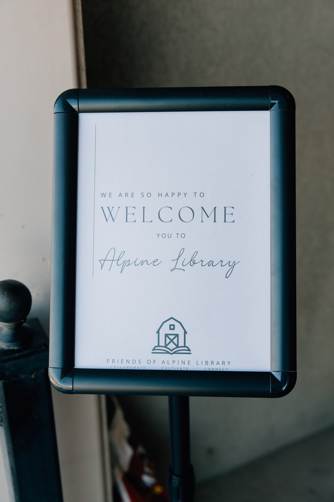

A local group of moms came together to open the first public library the city of Alpine has seen in its 180 year history.
Founded almost two centuries ago, the city of Alpine has never had what most communities consider to be a staple, a public library. But, thanks to the tireless efforts of volunteers in the community that has changed.

Alpine is a small city located in northern Utah County that was founded in 1850. Alpine is home to about 10,500 residents, and roughly one in three of them are under the age of 18. For years, members of the community have seen the need for a space where their children and families could gather to learn and connect.
"I used to take my three oldest kids to the public library where we lived in Spanish Fork. My two youngest daughters are now missing out on the chance to learn to love reading at a young age like my other kids," said Lindsey Nye, one of the moms behind the effort who now volunteers as the library's treasurer.
Other mothers with motives similar to Lindsey's decided to join together and take action.
In 2024, they formed The Friends of Alpine Library, which is an organization with the goal to "…to create a space that provides free access to books, learning resources, and meaningful community connection for all residents of Alpine," according to their website. Many other members of the community have joined in their efforts by donating money, books, time, and even a house.

Before the library had a permanent home, the community worked to give opportunities to children in other ways. They organized summer reading camps, hosted learning activities, and set up small pop up libraries around town. These activities were amazing for the children in the community, however, it was obvious that something was missing, Alpine needed a lasting space for the books and activities.
That opportunity came shortly after in 2025, when Burgess Orchards donated a property to The Friends of Alpine Library.
The generous donation located at 491 Alpine Highway just past Burgess Orchards, needed lots of work before it was library ready. It had endured years of neglect and was filled with a pungent smell of smoke.
That is where more volunteers stepped in.

Community members spent countless hours cleaning, repairing, and transforming the house into a cozy library. The smells of smoke and dust were replaced with the scent of fresh paint and book pages.
The library now stands to show what determination and service can do in a community. Alpine's isn't like most traditional public libraries. It is run entirely by volunteers and depends on donations to remain open and operating.
"It is so hard work to run a library without being funded by the city, but every time I see a group of kids at story time with their moms or a teenager come after school to the coding class, I feel like it really is totally worth it. So that's why I keep volunteering," said Bethany Sorenson, an Alpine resident of 9 years and the library's director of operations and facilities.

In a fast growing city with many young families, the library provides a vital space where children can come to learn, ask questions, and develop a love of reading. It gives children easy access to educational resources close to home such as music lessons, writing workshops, a STEM club, art classes, and more. The library has been continually vibrant with families eager to learn since the doors first opened in February 2026.
What started as a vision to fill a gap in the community has become a local staple to the learning and progression of Alpine's children.
The Friends of Alpine Library are not going to stop here. "We want to add more books and programs to the library and eventually raise enough money to build a nicer building with more space." Lindsey said.
The library is open to any and all donations as well as community members who are willing to volunteer. "I can't stay at the library all day [...] which is why we need volunteers so we can be open longer hours."

To learn more about the library and how you can help visit https://www.alpinelibrary.org/ .